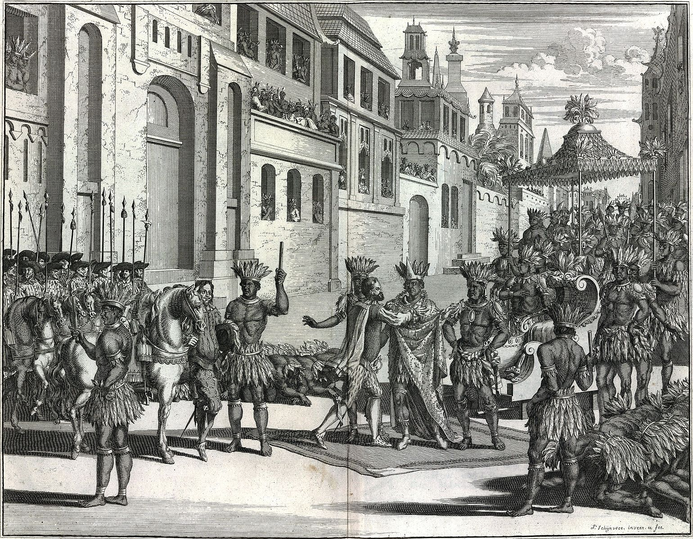

Columbian Exchange
.jpg)
The Ottoman capture of Constantinople and their subsequent control of the eastern trade routes prompted European states to seek out new avenues of reaching the lucrative markets of the east. Driven by the philosophy of mercantilism, the belief that there was a limited amount of material wealth in the world that had to be extracted before others could amass it, helped to motivate the westward expansion that led to the discovery of the Americas by Christopher Columbus in 1492.
The Americas, meaning North and South America as well as the Caribbean islands, were exceptionally rich in raw materials that were economically exploited by the European colonisers and merchants. However, this process was not linear, but rather reciprocal; goods not only went from the Americas to Europe, but also from Europe to the Americas. This reciprocal relationship is known as the Columbian Exchange. Frequently, this exchange took on the shape of a triangle, and involved the Europeans docking on the west coast of Africa first. Here, slaves were captured and taken to the New World, where they were sold to work on the agricultural estates that began to emerge soon after colonisation. These included estates dedicated to the production of crops such as sugar and tobacco. These were then shipped back to Europe, before the process started over again. The exploitation of this exchange had a dramatic effect on the lifestyle and consumer habits of people in Europe who suddenly had a much more stable access to new and exciting goods.
Of course, aspects of Old World culture were also brought to the New World. These included most notably domesticated animals for farming; on his second voyage in 1493 for instance, Christopher Columbus introduced pigs, cows, chickens, and horses to the Caribbean islands. The introduction of such animals had a profound impact on the lives of the Indigenous peoples of the Americas. It was not merely livestock the Europeans brought to the New World however. The European merchants, sailors and settlers carried with them both their Christian faith, and, more destructive to native cultures still, European diseases…
Conquistadors
The Conquistadors were, in effect, the men who conquered vast swathes of territory for the Spanish in the 15th and 16th century, across the Americas and later in Spain’s imperial territories in Asia such as the Philippines. Although some came from noble families, most were opportunistic young men from Spain (and indeed other European nations), who left Europe in search of fortune and fame (ostensibly in the service of the Spanish or Portuguese Crowns). Wealthy nobles from Europe rarely became involved as Conquistadors; they had no need of the risk or labour to secure their fortunes.
Many of these men had previous experience as soldiers in European wars and brought their experience to bear on the natives with devastating consequences. In their service to the European Crowns, they were not acting as a military force, but rather something more akin to a mercenary force; money, not patriotism, was the prime motivation for their service, and it was the search for this wealth that pushed them ever further into new territories.
Two of the most famous conquistadors are Hernán Cortés and Francisco Pizarro, who were chiefly responsible for the conquest of the Aztec and Inca empires respectively. From 1519 to 1521 Cortés led the campaign that resulted in the destruction of the ancient Aztec empire, resulting in the death of the Aztec ruler Moctezuma and the capture of the capital city of Tenochtitlán in August 1521. Pizarro led a number of expeditions into South America, culminating in the Conquest of Peru and the destruction of the Incan Empire in 1532.
Exploration

The European exploration of the New World was originally prompted by strictly economic needs; the loss of the eastern trade routes following the Ottoman capture of Constantinople prompted many European states to seek new avenues to the lucrative Asian markets. Naturally, when Christopher Columbus set sail from Europe in 1492, his journey to the Indies was cut short by his discovery of the Americas. Although Columbus’ initial voyages were not as lucrative as he had promised the Spanish Crown they would be (for which his reputation was tarnished), later voyages by other Europeans uncovered the wealth available for extraction from these new territories.
The search for sources of wealth in these new territories prompted European explorers and conquistadors to push on past Columbus’ initial discoveries. It wasn’t until 1513, over 20 years after Columbus first landed in the Caribbean, that the conquistador Vasco Nunez de Balboa crossed the Isthmus of Pananma, becoming the first European to have set eyes on the Pacific Ocean. Within 7 years, the window to the East was open; Portuguese explorer Ferdinand Magellan and his crew rounded the tip of Chile in South America (now named the Strait of Magellan) and sailed into the Pacific. Magellan is best known as the first man to circumnavigate the world, and his discoveries in the Pacific led to a renewed European struggle for territories in south east Asia. The entire world was now open for trade.
Native Weaknesses

European exploration and conquest of new territories in the Americas and beyond had a profound, and often horrific, impact on the indigenous communities that they encountered. Alongside the horrors of the Atlantic slave trade, which resulted in the forcible removal of people from Africa for a life in servitude, the natives the Europeans encountered in the Americas were susceptible to European exploitation.
In many instances, a number of factors contributed to a severe imbalance between the natives and the colonisers that led to a relatively easy process of conquest. Not only were the Europeans better armed than the natives, able to draw on metal weapons and early firearms to counter the rather more primitive native weapons, but they had also access to and knowledge of domesticated animals. Mounted on horses, the conquistadors could easily overpower natives on foot, not to mention move quicker and further. In some instances, the European attempts at colonisation were made easier by the exploitation of existing native conflicts and tensions. Hernán Cortés’ conquest of the Aztecs for instance was greatly aided by his alliance with the Totonac and Nahua peoples, who were keen to see Aztec pre-eminence come to an end.
Alongside their technological and military superiority, the Spanish also benefitted from the spread of European diseases. The native populations of the American territories had no natural immunity to diseases such as Smallpox. Epidemics became common, and ravaged the native populations killing untold numbers.